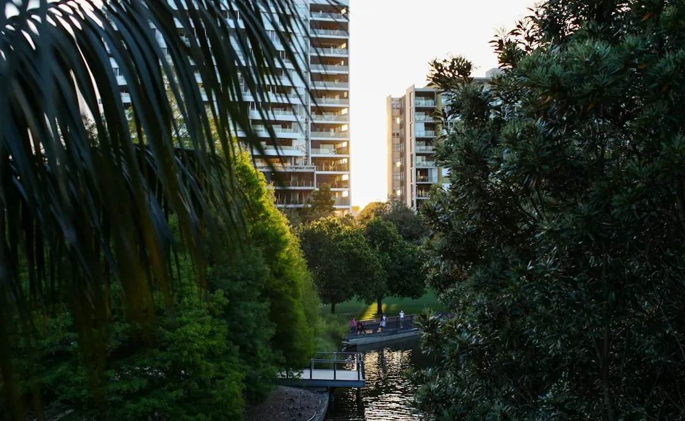

A retaining wall project in Brisbane should begin with wall height, retained soil, access, drainage signs and nearby loads, not just the visible material. Concrete sleeper, timber, besser block, rock, boulder and gabion systems suit different site conditions. Building approval may not be required only when all listed conditions fit, including a wall and retained fill or cut no higher than 1 metre, no surcharge, a 1.5 metre separation from buildings or other walls, and no pool fence role.
For homeowners comparing retaining wall contractors brisbane options, the practical decision is whether the site needs a routine quote, drainage diagnosis, repair assessment or an approval-aware engineered pathway.
Retaining Wall Contractors Brisbane Explained
Brisbane Retaining Walls asks for the suburb, wall height, material, access and drainage signs when a project is first described. Those details give a contractor a more useful starting point than a material preference alone. Include nearby driveways, buildings, pools, sheds, fences, other walls and any level above the retained ground.
Brisbane sites can move from a garden edge to a more involved project when a wall supports a house pad, borders a steep side path or sits beside a heavy stormwater route. Describe the wall from its lower side and upper side, then note where water runs and where materials could be carried or unloaded. Photos can be provided later if requested.
- Record visible leaning, bulging, wet soil, blocked weep holes or washed-out backfill.
- Note whether access is restricted or nearby structures limit excavation.
- Ask whether the next step is a site quote, drainage diagnosis, repair discussion or engineer pathway.
Choose a wall system around the site
Material selection should follow the ground, access, retained load and drainage plan. Steel-post concrete sleeper walls are described for blocks seeking long service life and tidy lines. H4 treated timber sleepers may suit low-height garden edges, older yards and cost-sensitive replacements. Core-filled besser block can support rendered finishes, tight boundaries and structural applications that need careful certification.
Rock and boulder walls suit sloping sites where batter, drainage and stone selection can be considered together. Gabion walls use wire baskets and are described for free-draining terraces, garden edges and a heavy textured face. A responding contractor still needs to confirm the material, design, access, drainage, price and availability for the exact site in writing.
Compare repair and replacement decisions
A leaning sleeper wall should be assessed as a system. The movement may involve sleepers, posts, retained ground or water pressure, so replacing a board alone will not correct failed supports or water pressure. The surrounding bays and any excavation or temporary support should be considered before material is removed.
| Site observation | Question to ask | Possible next discussion |
|---|---|---|
| Limited timber deterioration | Are the remaining posts and drainage sound? | Local repair may be considered |
| Widespread rot or failed posts | Has the extent and cause of decay been assessed? | Replacement may be more appropriate |
| Wet backfill or blocked outlets | Where will subsoil water discharge? | Drainage diagnosis before pricing |
For a decaying base sleeper, ask how the retained soil will be controlled while the board is removed. Persistent wet backfill, failed posts or wider deterioration can change an isolated replacement into a broader repair or replacement scope.
For related guidance on an existing wall, see the Brisbane retaining wall repairs guide.
Check approval conditions before quoting
The published approval checklist says building approval is not required only where every listed condition fits: the wall plus retained fill or cut is no more than 1 metre, there is no surcharge loading, the wall is at least 1.5 metres from a building or another retaining wall, and it is not part of a pool fence. A single condition outside that list can change the pathway.
Ask a contractor, private certifier or RPEQ engineer to explain the next step when a driveway, house, pool, shed or another wall sits above the retained level, when the separation is limited, or when the wall forms part of a pool barrier. The relevant questions concern planning approval, building approval, design responsibility and where drainage will discharge.
- Is there a load above the wall, including a driveway or building?
- Is the wall within 1.5 metres of a building or another retaining wall?
- Does the wall form part of a pool barrier?
- Does the proposed design require an engineered or council-approved pathway?
Prepare a quote that can be compared
A useful enquiry describes the wall height, retained soil, preferred or existing material, access, nearby structures and drainage signs. It should also identify whether the request concerns a new wall, replacement, repair, subsoil system or an engineered design. These inputs help separate a straightforward garden-edge discussion from a project affected by excavation, surcharge, certification or water management.
When comparing written responses, check that each one addresses the same wall length and height, material, excavation assumptions, drainage arrangement, disposal or access requirements, approval pathway and exclusions. Ask which items remain subject to site confirmation. Brisbane Retaining Walls states that submitting an enquiry does not confirm provider availability, timing or acceptance of the work, so those points should be confirmed directly before any commitment.
Who this guide applies to
This guide is for Brisbane and South East Queensland property owners considering a new retaining wall, replacement, repair or drainage-related assessment. It is particularly relevant where sloping ground, older cut-and-fill work, restricted access, nearby buildings, pools, driveways or neighbouring levels affect the scope.
It is not a substitute for a site inspection, engineering advice, private certification or council guidance. Use the published details to prepare better questions, then ask the relevant contractor or certifier to confirm the design, approval and drainage pathway for the property.
- Describe the site. Record wall height, retained soil, material, access, nearby structures and visible drainage signs.
- Classify the work. State whether the request concerns a new wall, repair, replacement, drainage system or engineered pathway.
- Check approval triggers. Compare the site with the height, surcharge, separation and pool-barrier conditions before work begins.
- Compare written scopes. Confirm design, drainage, access, price, availability and approval responsibilities for the exact site.
| Site observation | Question to ask | Possible next discussion |
|---|---|---|
| Limited timber deterioration | Are the remaining posts and drainage sound? | Local repair may be considered |
| Widespread rot or failed posts | Has the extent and cause of decay been assessed? | Replacement may be more appropriate |
| Wet backfill or blocked outlets | Where will subsoil water discharge? | Drainage diagnosis before pricing |
Common questions
What should be included in a retaining wall enquiry? Include the suburb, wall height, material, access, nearby structures, retained soil and any movement or drainage signs. Photos can be provided later if requested.
Does a wall under 1 metre automatically avoid building approval? No. The published checklist requires all listed conditions to fit, including no surcharge, at least 1.5 metres from a building or another retaining wall, and no pool-fence role.
What should happen when a sleeper wall is bowing? The sleepers, posts, retained ground and drainage should be assessed together. Replacing a board alone will not correct failed supports or water pressure.
When might replacement be preferable to timber repair? Widespread rot, failed posts or persistent wet backfill can make replacement more appropriate. The extent of decay and its cause should be assessed first.
This guide covers Brisbane retaining wall materials, drainage questions, repair decisions, approval checks and quote preparation.